Code
import seaborn as sns
import polars as pl
from polars import colIn this tutorial we’ll learn how to create statistical visualizations in Python using Seaborn. Just like polars gave us a consistent, intuitive way to work with DataFrames, seaborn gives us a consistent, intuitive way to visualize data.
Seaborn is built on top of matplotlib (another plotting library), but provides a much higher-level interface designed specifically for exploring and creating statistical visualizations.
Python’s plotting ecosystem has a long history and started as an attempt to replicate plotting behavior in MATLAB. The first, and still foundational plotting library is called matplotlib. You can use it to create virtually any visualization you can imagine. The problem?
matplotlib requires you to think about how to draw things - coordinates, artists, axes, figures, patches, collections… It’s powerful but what we call low-level. It can be great for very quick plots, but for more complicated visuals it can get tedious fast.
seaborn is a much high-level plotting library that lets you think about what your data means - which column goes on which axis, how to split by categories, what relationships to highlight, and it handles the drawing details for you (similar to ggplot).
Fun fact: seaborn is developed and maintained by Michael Waskom a fellow Psych/Neuro PhD when he was a graduate student. It’s now the go-to library for statistical plotting.
This notebook is designed for you to work through at your own pace and use as a reference later.
As you go through this notebook, regularly consult the seaborn documentation.* Learning to quickly scan and read read API docs is a critical skill - the docs show you every parameter and option available.
*Note: we’re NOT using seaborn’s “Objects interface” which is even more like ggplot, but still has a several rough edges that we wanted to avoid for the purposes of this class.
You can also always use the help() function from within this notebook:
import seaborn as sns
help(sns.relplot)We import seaborn with the conventional alias sns, along with polars for data manipulation:
import seaborn as sns
import polars as pl
from polars import colSeaborn includes several built-in datasets we can use to learn. Let’s load the famous penguins dataset - body measurements for three penguin species from three islands in Antarctica:
# Load dataset and convert to polars DataFrame
penguins = pl.DataFrame(sns.load_dataset("penguins"))
penguins.head()| species | island | bill_length_mm | bill_depth_mm | flipper_length_mm | body_mass_g | sex |
|---|---|---|---|---|---|---|
| str | str | f64 | f64 | f64 | f64 | str |
| "Adelie" | "Torgersen" | 39.1 | 18.7 | 181.0 | 3750.0 | "Male" |
| "Adelie" | "Torgersen" | 39.5 | 17.4 | 186.0 | 3800.0 | "Female" |
| "Adelie" | "Torgersen" | 40.3 | 18.0 | 195.0 | 3250.0 | "Female" |
| "Adelie" | "Torgersen" | null | null | null | null | null |
| "Adelie" | "Torgersen" | 36.7 | 19.3 | 193.0 | 3450.0 | "Female" |
Most seaborn functions are supposed to work with polars (our preferred) DataFrame library out-of-the-box. However, there are still a few rough-edges here and there.
So we highly recommend using a DataFrame’s .to_pandas() method, when you are calling a seaborn function instead of using the DataFrame directly. All the examples throughout this notebook use that pattern to remind you.
It’s also easy to convert the otherway by just passing a pandas DataFrame to pl.DataFrame():
# polars -> pandas for seaborn plotting
mydf.to_pandas()
# pandas -> polars, if ever needed, e.g. loading built-in seaborn datasets
mydf = pl.DataFrame(pandas_df)seaborn mental modelSimilar to ggplot in R, you build figures by mapping column names to aesthetic properties
| Mapping | What it controls |
|---|---|
x |
Position on x-axis |
y |
Position on y-axis |
hue |
Color of points/bars/lines |
col |
Create columns of subplots |
row |
Create rows of subplots |
style |
Marker style (scatter) or line style |
size |
Size of points |
You an mix and match how you use seaborn between two kinds of approaches:
kind argument to pick a typematplotlib)
| Function | Purpose | Plot Types |
|---|---|---|
sns.relplot() |
Relationships between numeric variables | sns.scatter, sns.line |
sns.displot() |
Distributions of variables | sns.hist, sns.kde, sns.ecdf |
sns.catplot() |
Categorical comparisons | sns.strip, sns.box, sns.violin, sns.bar, sns.point |
sns.lmplot() (not pictured above) |
Regression models | sns.regplot (not pictured above) |
Each function accepts the same mappings (along with some data) using and returns a FacetGrid - a container that can hold one or more subplots.
relplot()Use sns.relplot() when you want to see how numeric variables relate to each other. Let’s explore the relationship between flipper length and body mass in penguins:
Remember Python cares about white-space and indentation except between (). So like the previous notebook, we’re using new lines to separate inputs to each seaborn function just for clarity. You can put them on a single line and it works the same
sns.relplot(
data=penguins.to_pandas(), # <- remember .to_pandas() to convert on-the-fly, no need for another variable
x="flipper_length_mm",
y="body_mass_g"
)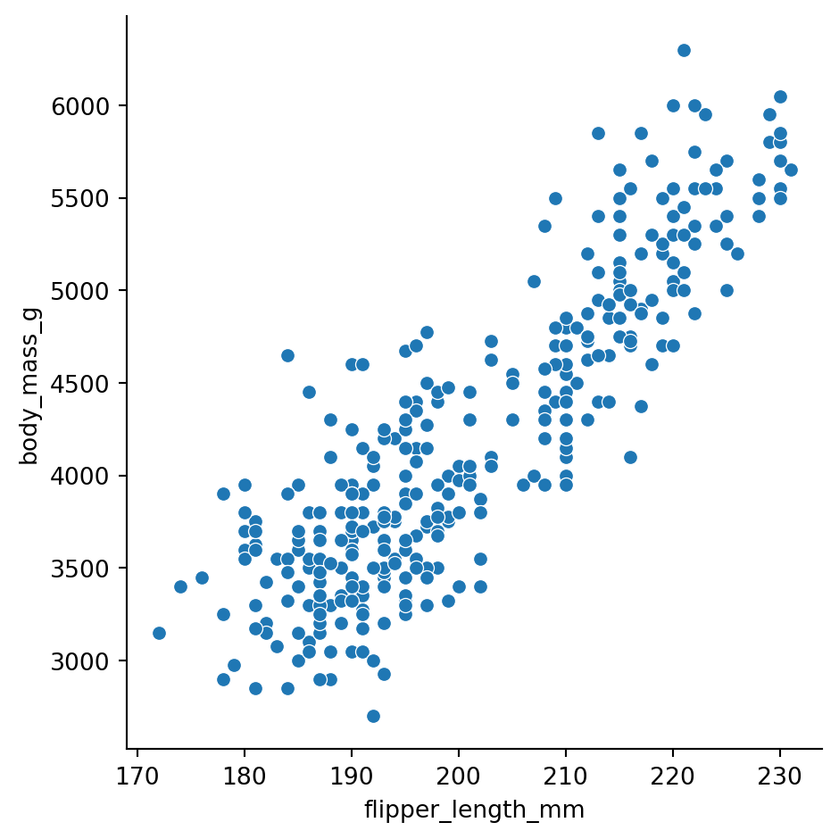
There’s a clear positive relationship - penguins with longer flippers tend to be heavier.
But wait - are there differences by species? Let’s map hue to the species column:
sns.relplot(
data=penguins.to_pandas(),
x="flipper_length_mm",
y="body_mass_g",
hue="species"
)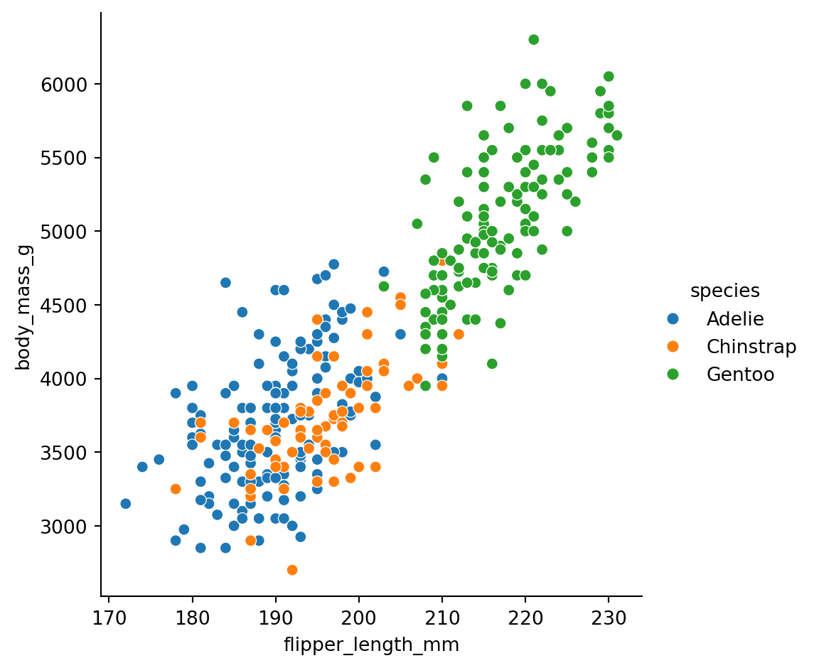
Now we can see that Gentoo penguins (green) are generally larger than Adelie (blue) and Chinstrap (orange).
What if we want separate plots for each species? Map col to species:
sns.relplot(
data=penguins.to_pandas(),
x="flipper_length_mm",
y="body_mass_g",
hue="species",
col="species"
)
You can control the size and arrangement of subplots: - height: Height of each subplot (in inches) - aspect: Width-to-height ratio - col_wrap: Maximum number of columns before wrapping
sns.relplot(
data=penguins.to_pandas(),
x="flipper_length_mm",
y="body_mass_g",
col="species",
# we left out hue so species is only mapped to column
height=3,
aspect=1.2
)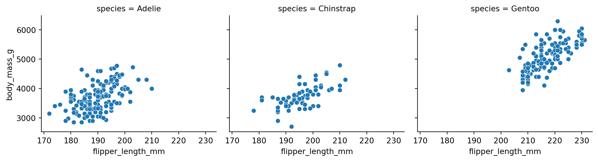
lmplot()When you want to see the trend in a relationship, use sns.lmplot(). It works just like relplot() but adds a regression line with an optional confidence band:
sns.lmplot(
data=penguins.to_pandas(),
x="flipper_length_mm",
y="body_mass_g",
col="species"
)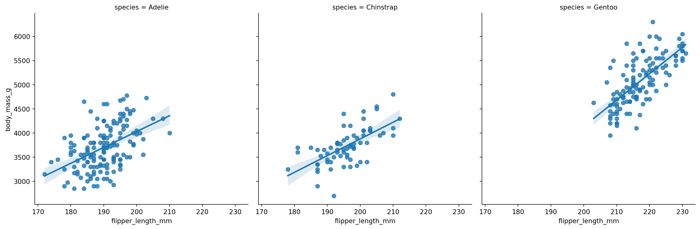
One of the strengths of seaborn (and over ggplot) is that it calculates confidence bands/intervals using bootstrap resampling by default. We’ll cover cover statistical uncertainty and bootstrapping in more depth later in the course, but this is really nice for quick visuals without having to calculate additional statistics yourself, even if when working with small samples.
You can control this using the numerous additional arguments (inputs) that many seaborn functions support. Here are some common ones and the lmplot help page:
n_boot (1000 by default)units (None by default - great when you have repeated observations per cluster/participant/etc)errrorbar/ ci (lmplot only) (95 by default)Create a scatter plot showing the relationship between bill_length_mm and bill_depth_mm, colored by species.
What pattern do you notice? Does the overall trend match the within-species trends?
# Your code heredisplot()Use sns.displot() when you want to understand the distribution of a variable - how values are spread out, where they cluster, whether there are outliers.
The kind parameter controls the type of distribution plot: - "hist": Histogram (default) - "kde": Kernel density estimate (smoothed histogram) - "ecdf": Empirical cumulative distribution function
Let’s look at the distribution of body mass:
sns.displot(
data=penguins.to_pandas(),
x="body_mass_g",
kind="hist"
)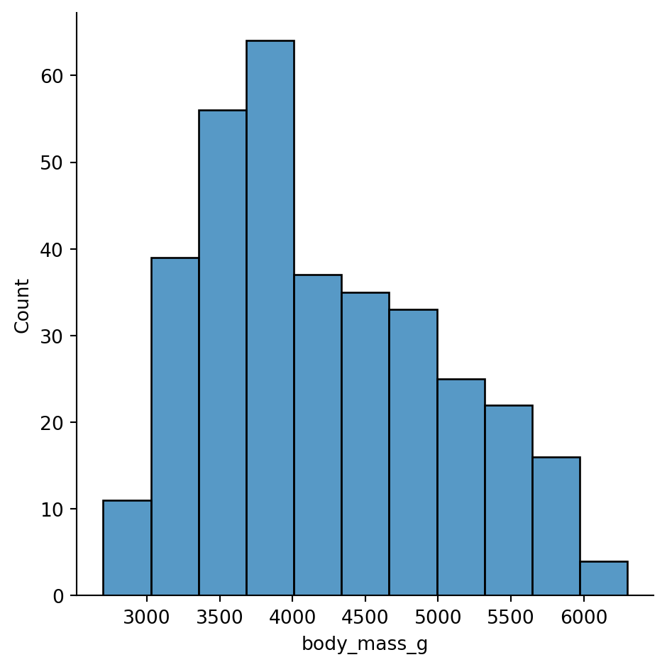
Hmm, this distribution doesn’t look unimodal - there might me more than one peak. Let’s try increasing the granularity by increasing the number of automatically calculated bins
sns.displot(
data=penguins.to_pandas(),
x="body_mass_g",
kind="hist",
bins=30
)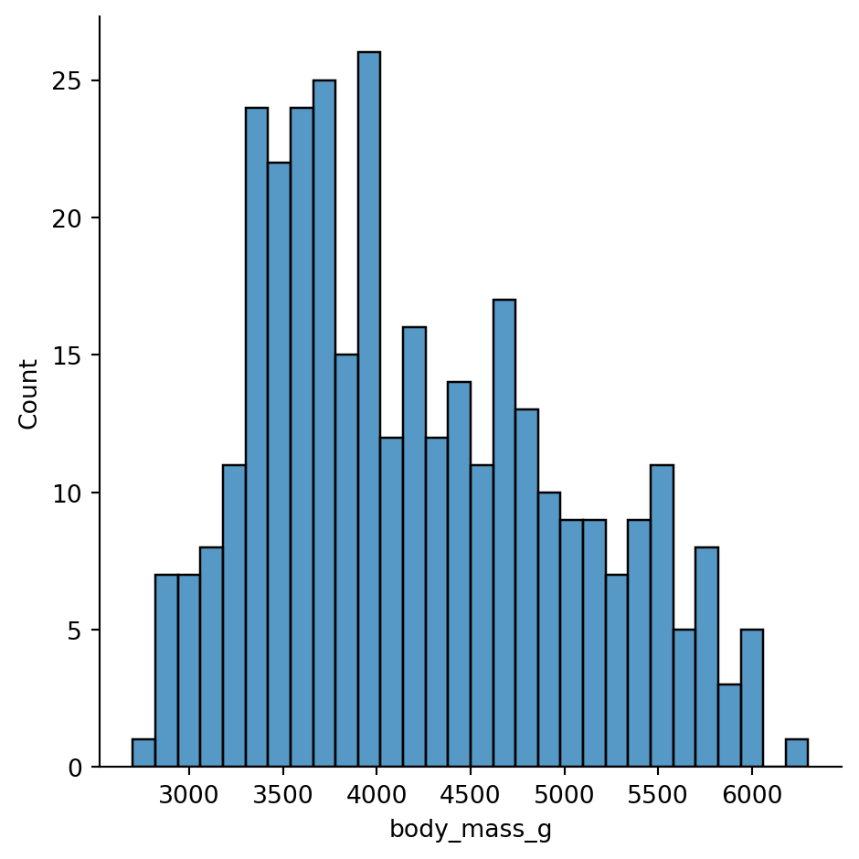
Ah we can see it a bit better now, but it’s probably driven the fact that we’re ignoring difference species
sns.displot(
data=penguins.to_pandas(),
x="body_mass_g",
kind="hist",
hue="species",
bins=30
)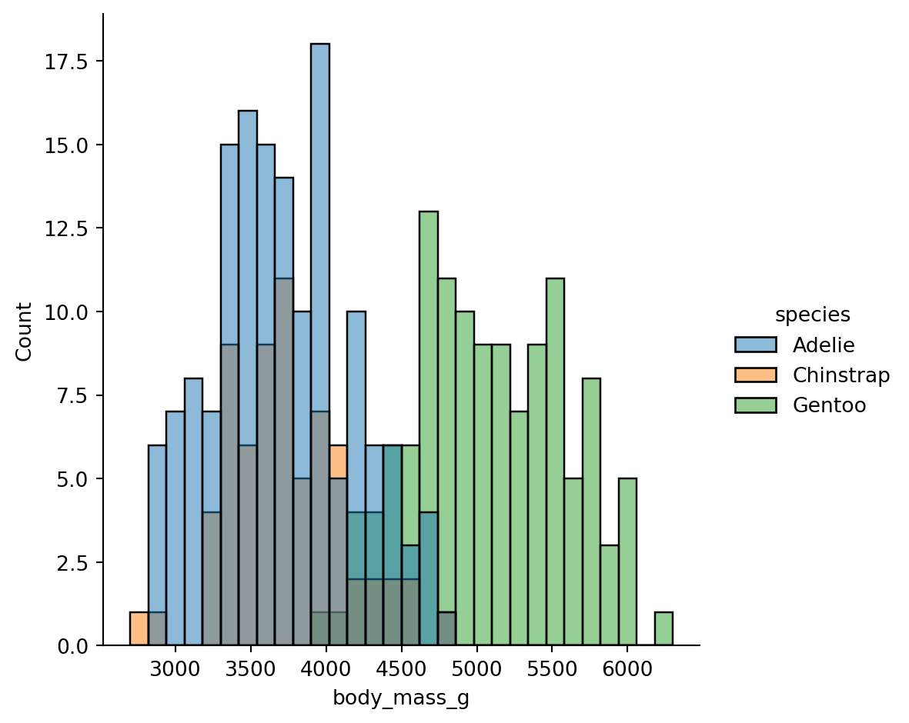
The bimodality comes from Gentoo penguins being much heavier than the other two species.
When histograms overlap, you can use multiple="stack" to stack them:
sns.displot(
data=penguins.to_pandas(),
x="body_mass_g",
kind="hist",
hue="species",
bins=30,
multiple="stack"
)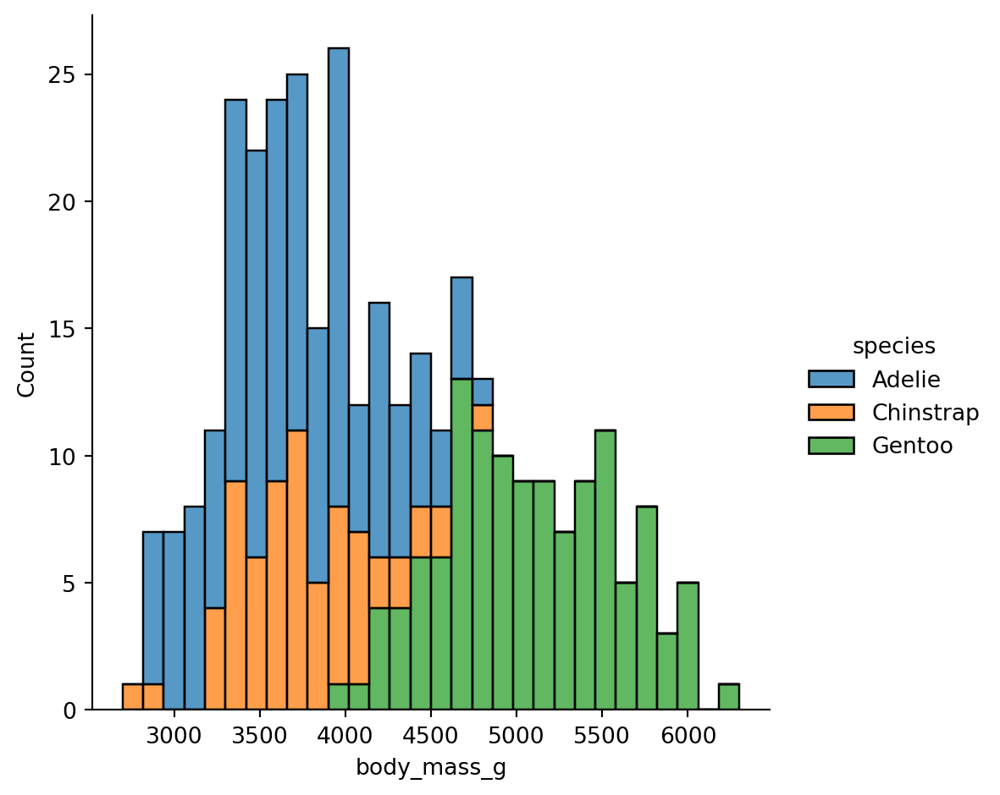
Kernel Density Estimation (KDE) creates a smoothed version of a histogram. It’s often easier to compare shapes:
sns.displot(
data=penguins.to_pandas(),
x="body_mass_g",
kind="kde",
hue="species",
fill=True # Fill under the curves
)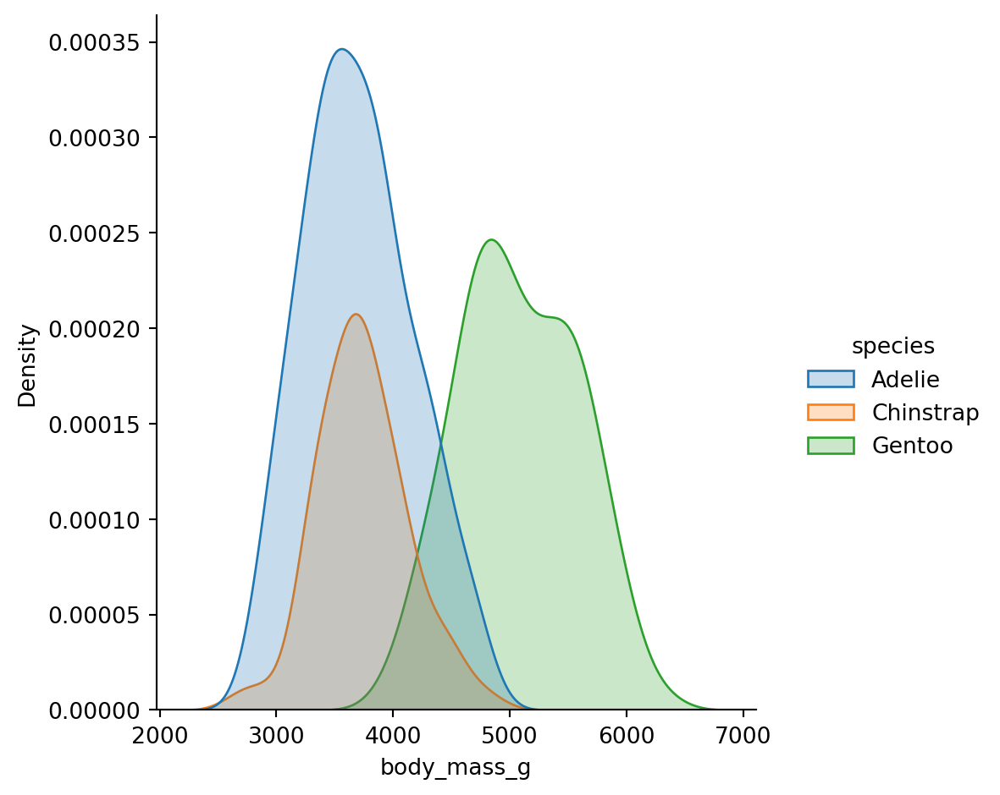
Histograms have bins (bins or binwidth parameters), KDE has smoothing (bw_adjust parameter).
Too few bins / too much smoothing can hide patterns. Too many bins / too little smoothing creates noise.
Always try a few values to make sure you’re not missing something important.
You can visualize the joint distribution of two variables by specifying both x and y:
sns.displot(
data=penguins.to_pandas(),
x="flipper_length_mm",
y="body_mass_g",
kind="kde",
hue="species"
)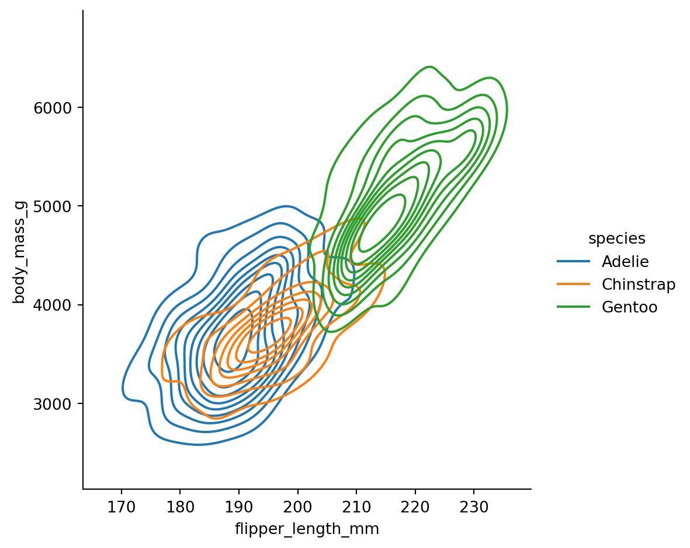
The contour lines show regions of equal density - like a topographic map of where the data concentrates.
Create a histogram of bill_length_mm split by sex using col="sex".
What do you notice about the distributions?
# Your code herecatplot()Use sns.catplot() when one of your variables is categorical (like species, sex, or experimental condition).
The kind parameter offers several options:
Show individual observations: - "strip": Jittered points - "swarm": Points arranged to avoid overlap
Show distributions: - "box": Box plots (median, quartiles, outliers) - "violin": Violin plots (KDE + box plot hybrid)
Show summaries: - "bar": Mean with error bars - "point": Mean with error bars as points/lines
Strip plots show every data point, jittered horizontally to reduce overlap:
sns.catplot(
data=penguins.to_pandas(),
x="species",
y="body_mass_g",
kind="strip"
)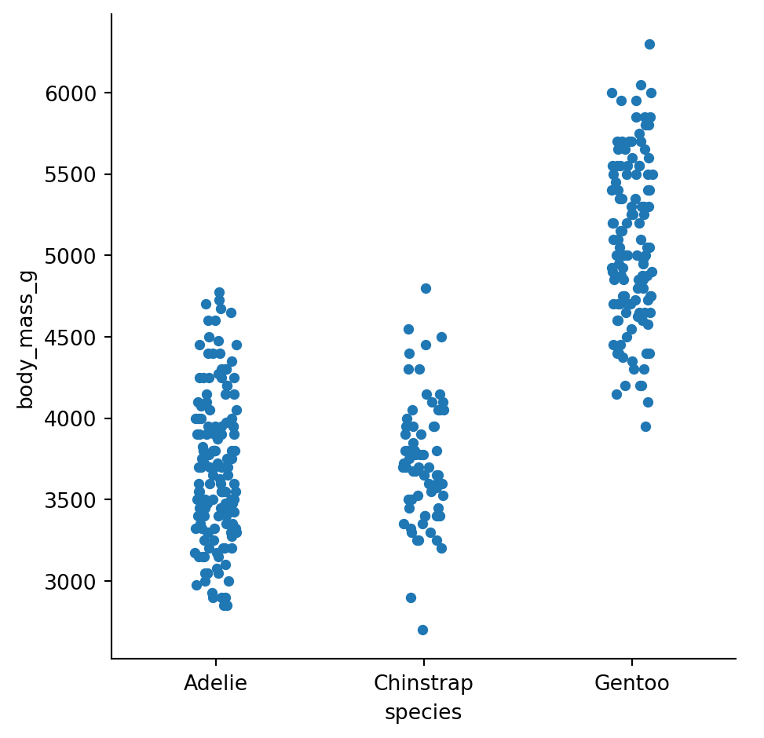
Swarm plots arrange points so they don’t overlap, making the distribution shape visible:
sns.catplot(
data=penguins.to_pandas(),
x="species",
y="body_mass_g",
kind="swarm"
)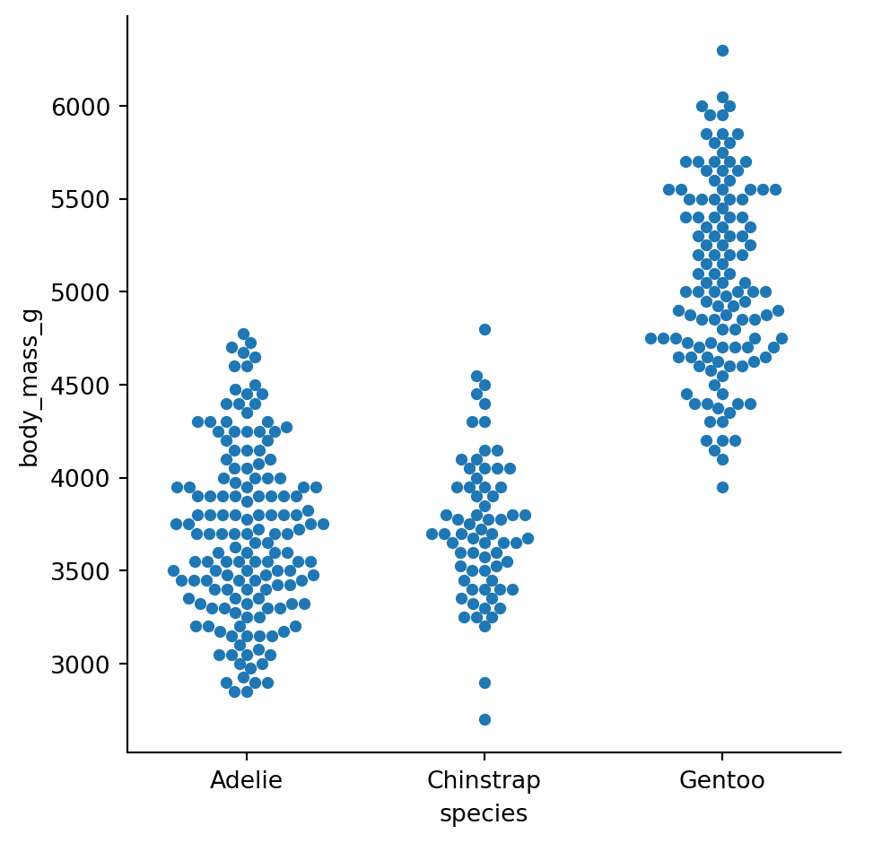
Add hue to compare subgroups within each category:
sns.catplot(
data=penguins.to_pandas(),
x="species",
y="body_mass_g",
hue="sex",
kind="swarm"
)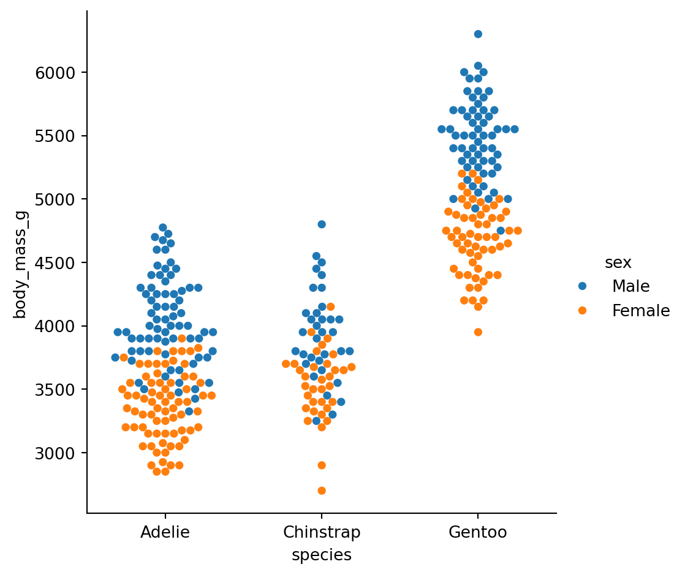
Box plots summarize the distribution with quartiles:
sns.catplot(
data=penguins.to_pandas(),
x="species",
y="body_mass_g",
hue="sex",
kind="box"
)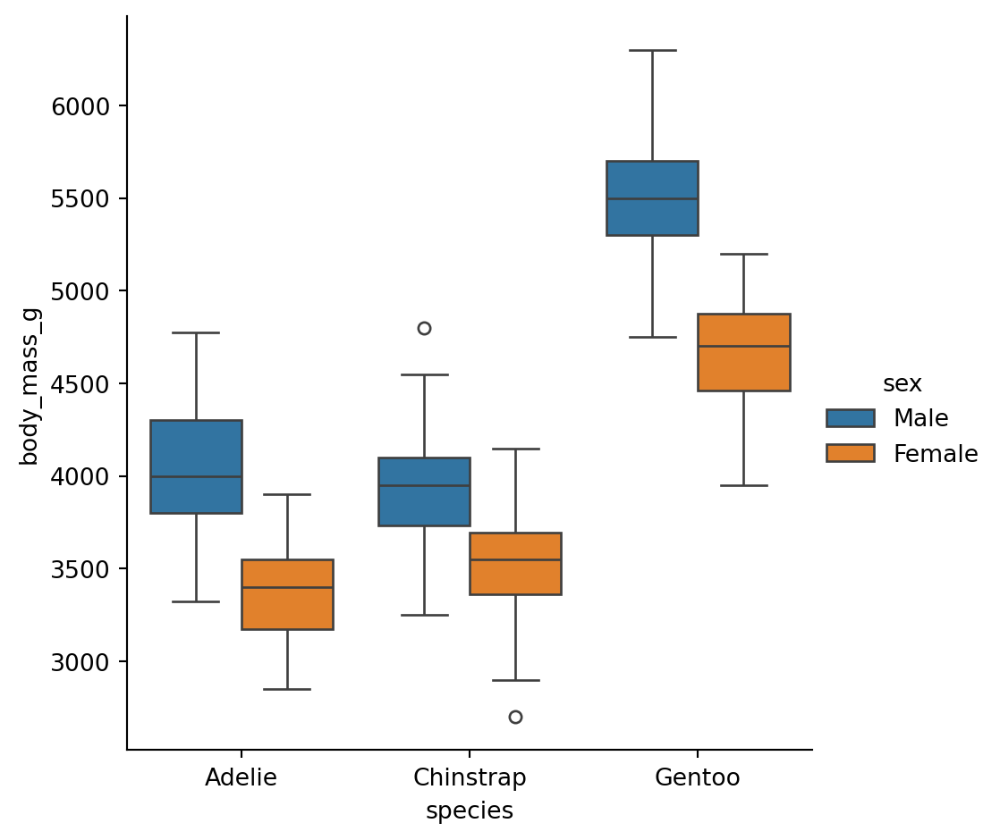
Box: Middle 50% of data (25th to 75th percentile) Line in box: Median (50th percentile) Whiskers: Extend to 1.5x the box width Diamonds: Outliers beyond the whiskers
Violin plots combine a box plot with a KDE, showing the full distribution shape:
sns.catplot(
data=penguins.to_pandas(),
x="species",
y="body_mass_g",
hue="sex",
kind="violin"
)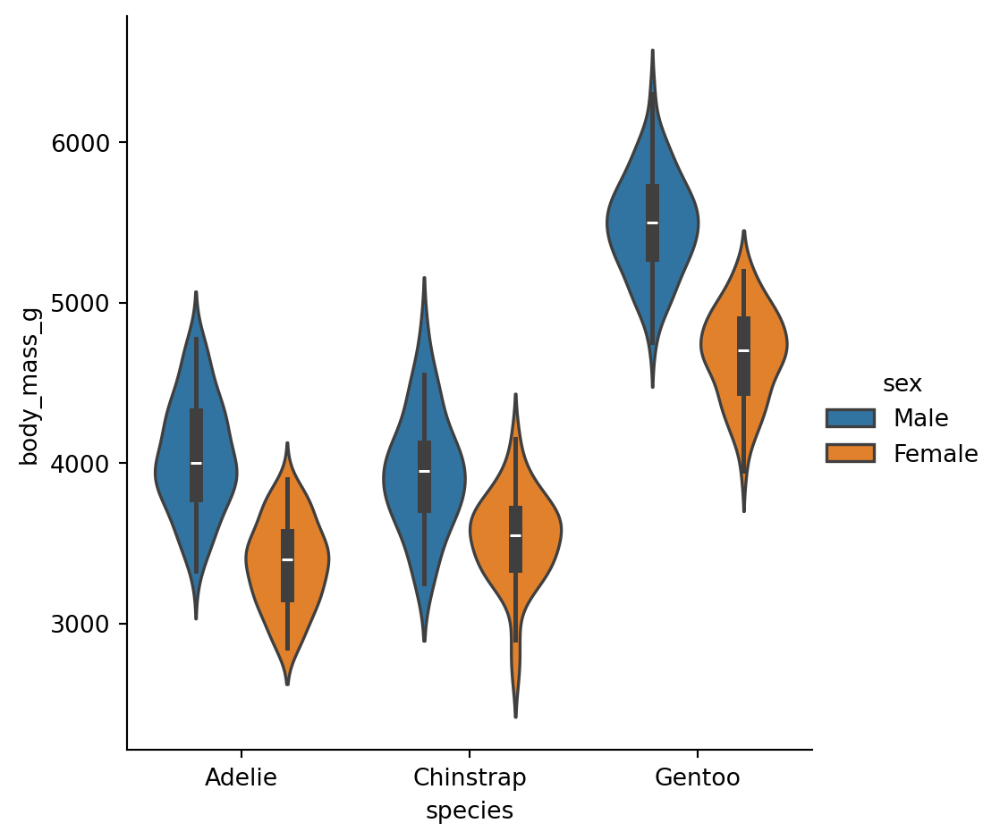
By default, bar plots show the mean of each group with error bars (95% CI by default):
sns.catplot(
data=penguins.to_pandas(),
x="species",
y="body_mass_g",
hue="sex",
kind="bar"
)We can change this by passing in a different estimator either as a string that seaborn understands, or a custom function
sns.catplot(
data=penguins.to_pandas(),
x="species",
y="body_mass_g",
hue="sex",
kind="bar",
estimator="median" # <- using the median
)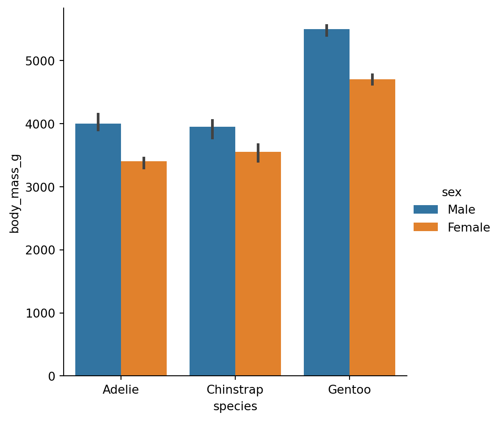
Point plots are similar but use points and lines, which can be better for comparing groups within categories:
sns.catplot(
data=penguins.to_pandas(),
x="sex",
y="body_mass_g",
hue="species",
kind="point",
estimator="min", # <- using the minimum
errorbar=None, # <- no uncertainty calculations
)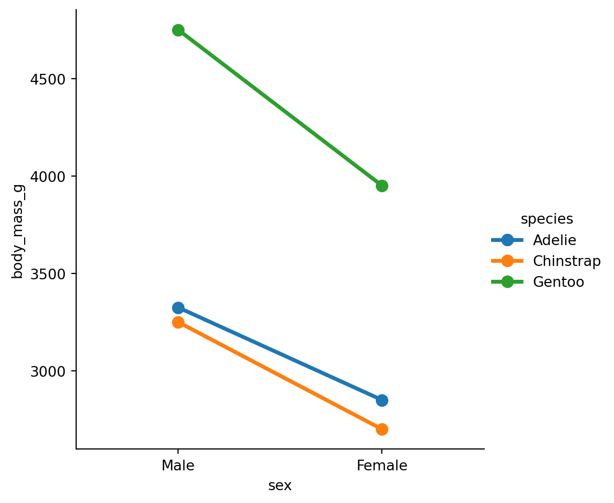
Remember our first statistical principle: aggregation Bar and point plots show only the summary statistic and uncertainty. They don’t tell you much about the actual range and shape (distribution) of the data.
To help layer multiple plots onto the same FacetGrid you can use the .map_dataframe() method that the FacetGrid has:
grid = sns.catplot(
data=penguins.to_pandas(),
x="species",
y="body_mass_g",
hue="sex",
kind="bar",
)
# Saving the output of catplot (FacetGrid) to a variable
# makes it easy to get help on its *method*
help(grid.map_dataframe)Help on method map_dataframe in module seaborn.axisgrid:
map_dataframe(func, *args, **kwargs) method of seaborn.axisgrid.FacetGrid instance
Like ``.map`` but passes args as strings and inserts data in kwargs.
This method is suitable for plotting with functions that accept a
long-form DataFrame as a `data` keyword argument and access the
data in that DataFrame using string variable names.
Parameters
----------
func : callable
A plotting function that takes data and keyword arguments. Unlike
the `map` method, a function used here must "understand" Pandas
objects. It also must plot to the currently active matplotlib Axes
and take a `color` keyword argument. If faceting on the `hue`
dimension, it must also take a `label` keyword argument.
args : strings
Column names in self.data that identify variables with data to
plot. The data for each variable is passed to `func` in the
order the variables are specified in the call.
kwargs : keyword arguments
All keyword arguments are passed to the plotting function.
Returns
-------
self : object
Returns self.
Let’s use the method. We can pass in sns.striplot as the function and then provide our mappings:
grid.map_dataframe(
sns.stripplot,
x="species",
y="body_mass_g",
hue="sex",
dodge=True,
alpha=0.5
)Create a box plot of flipper_length_mm by island, with separate subplots (col) for each species.
Are there island differences within species?
Try layering the data on top and trying to understand how it works
# Your code hereSeaborn has two special functions for getting a quick overview of your data:
sns.jointplot(): One relationship with marginal distributionssns.pairplot(): All pairwise relationships at oncejointplot() shows the relationship between two variables AND their individual distributions:
sns.jointplot(
data=penguins.to_pandas(),
x="flipper_length_mm",
y="body_mass_g",
hue="species"
)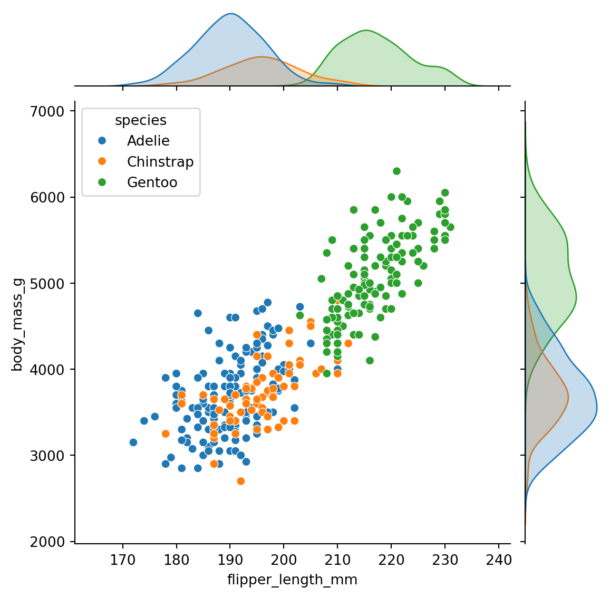
pairplot() creates a matrix of scatter plots for all pairs of numeric variables:
# pairplot needs pandas, so we convert
sns.pairplot(
data=penguins.to_pandas(),
hue="species"
)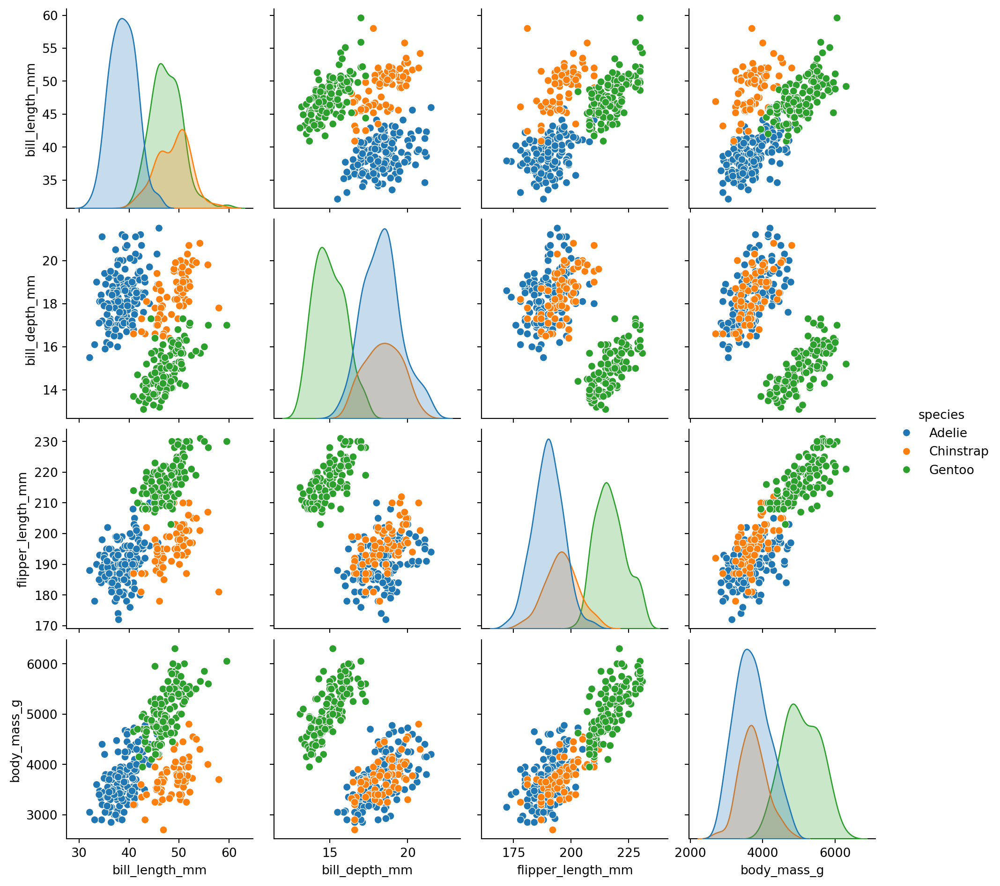
The diagonal shows distributions for each variable. Off-diagonal shows scatter plots between pairs.
This is a great way to quickly explore relationships in a new dataset!
Seaborn provides several ways to customize plots without diving into matplotlib.
Themes control the overall style (background, grid lines, etc.): - "darkgrid" (default), "whitegrid", "dark", "white", "ticks"
Contexts control the scale (good for different output sizes): - "paper", "notebook" (default), "talk", "poster"
Use sns.set_theme() to change both for all subsequent plots:
# Set a clean theme with larger text
sns.set_theme(style="whitegrid", context="talk")
sns.relplot(
data=penguins.to_pandas(),
x="flipper_length_mm",
y="body_mass_g",
hue="species"
)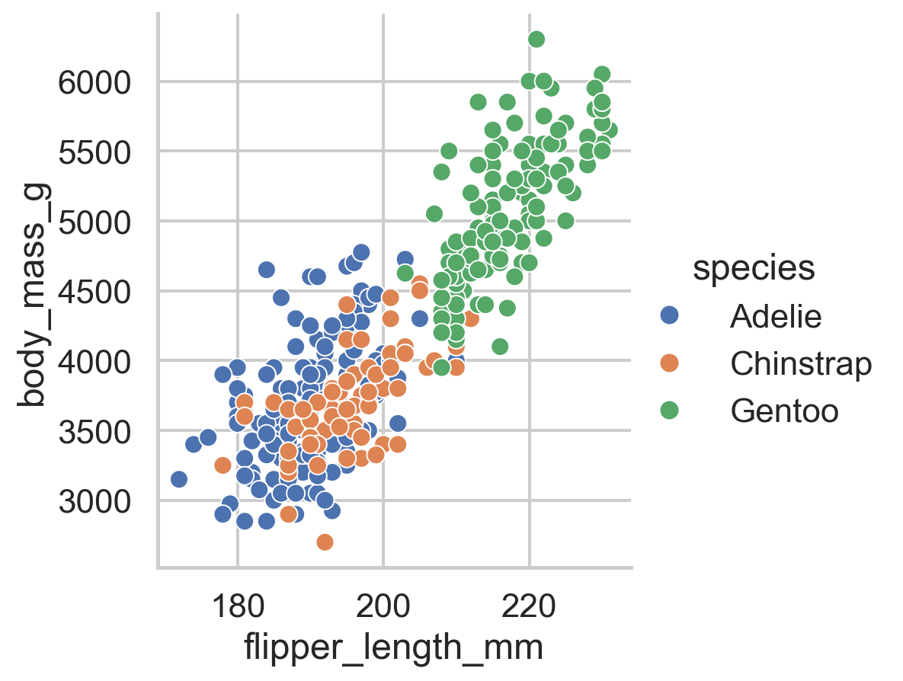
# Reset to defaults
sns.set_theme(style="darkgrid", context="notebook")Seaborn has many built-in color palettes. Pass a palette name to the palette parameter:
sns.catplot(
data=penguins.to_pandas(),
x="species",
y="body_mass_g",
hue="species",
kind="box",
palette="Set2"
)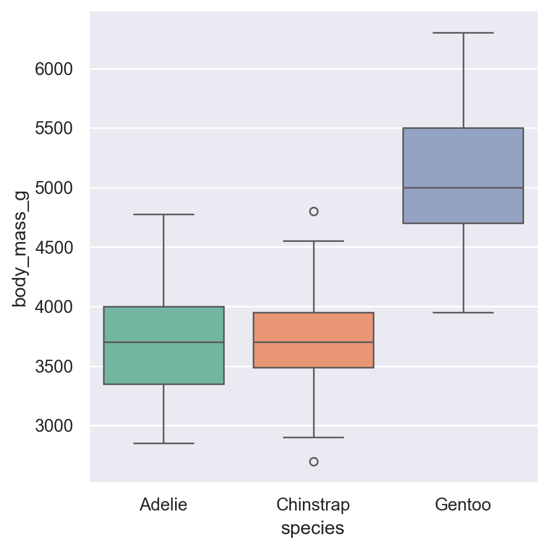
Common palettes: - Categorical: "Set1", "Set2", "Paired", "tab10" - Sequential: "Blues", "Greens", "viridis", "rocket" - Diverging: "coolwarm", "RdBu", "vlag"
The FacetGrid returned by figure-level functions has methods for customization:
| Method | Purpose |
|---|---|
.set_axis_labels(x, y) |
Change axis labels |
.set_titles(template) |
Change subplot titles |
.set(xlim=, ylim=) |
Set axis limits |
.tight_layout() |
Adjust spacing |
.figure.suptitle() |
Add overall title |
g = sns.relplot(
data=penguins.to_pandas(),
x="flipper_length_mm",
y="body_mass_g",
col="species",
height=3
)
# Customize using FacetGrid methods
g.set_axis_labels("Flipper Length (mm)", "Body Mass (g)")
g.set_titles("{col_name}")
g.figure.suptitle("Penguin Body Measurements", y=1.02)Text(0.5, 1.02, 'Penguin Body Measurements')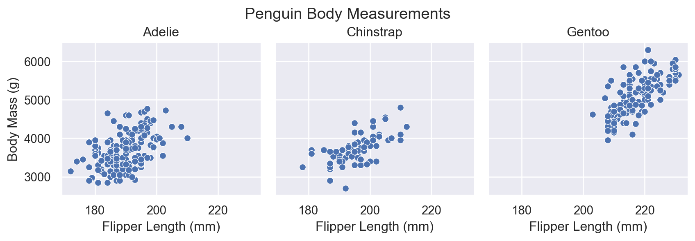
By default, seaborn orders categorical variables as they appear in the data. Use these parameters to control order:
order: Order for the x-axis variablehue_order: Order for hue categoriescol_order, row_order: Order for subplot columns/rowssns.catplot(
data=penguins.to_pandas(),
x="species",
y="body_mass_g",
kind="bar",
order=["Chinstrap", "Adelie", "Gentoo"] # Custom order
)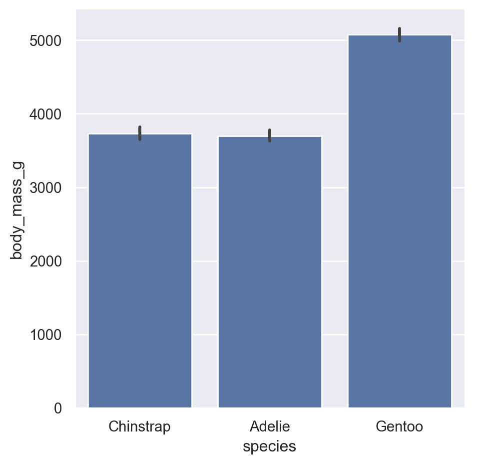
Create a violin plot of bill_length_mm by species, with: - A “whitegrid” theme - The “pastel” color palette - Species ordered alphabetically - Axis labels “Species” and “Bill Length (mm)”
# Your code hereThese are common customization tasks that aren’t obvious from the basic API. Bookmark this section for future reference!
Seaborn places legends automatically, but you often want them elsewhere. Use sns.move_legend():
myplot = sns.relplot(
data=penguins.to_pandas(),
x="flipper_length_mm",
y="body_mass_g",
hue="species",
height=4
)
# Move legend outside the plot
sns.move_legend(myplot, "upper left", bbox_to_anchor=(1, 1))
# Since we saved the plot to a variable we need to type the variable name to see it
myplot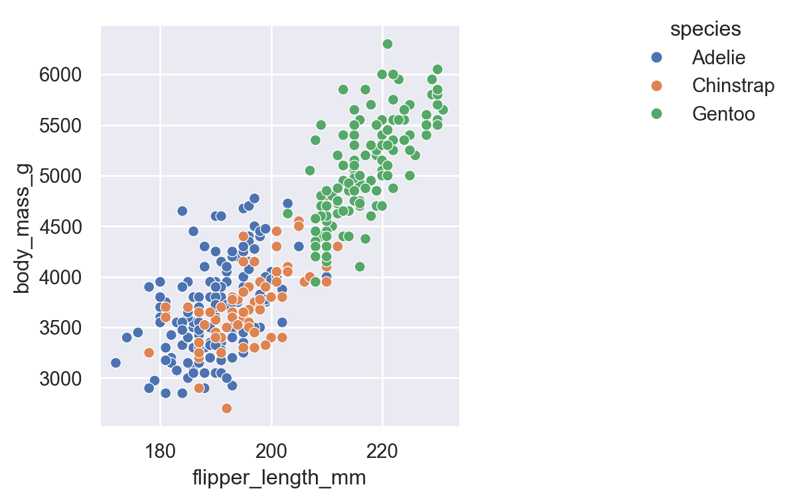
To remove a legend entirely, set legend=False in the plotting function:
sns.relplot(
data=penguins.to_pandas(),
x="flipper_length_mm",
y="body_mass_g",
hue="species",
legend=False, # No legend
height=4
)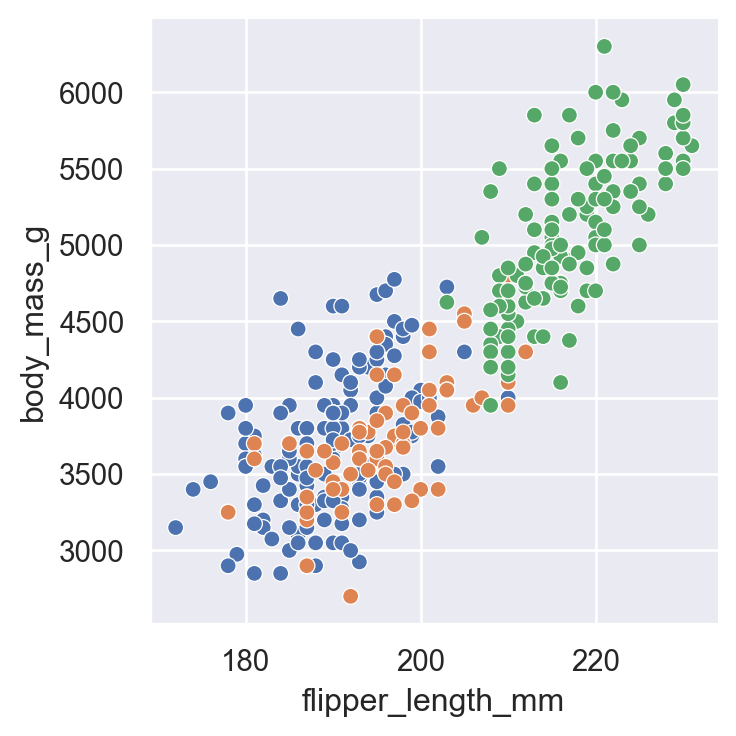
Long category names often overlap. Use .set_xticklabels() with rotation:
rotated = sns.catplot(
data=penguins.to_pandas(),
x="island",
y="body_mass_g",
hue="species",
kind="bar"
)
# Rotate x-axis labels
rotated.set_xticklabels(rotation=45, ha="right") # ha = horizontal alignment
# Show it
rotated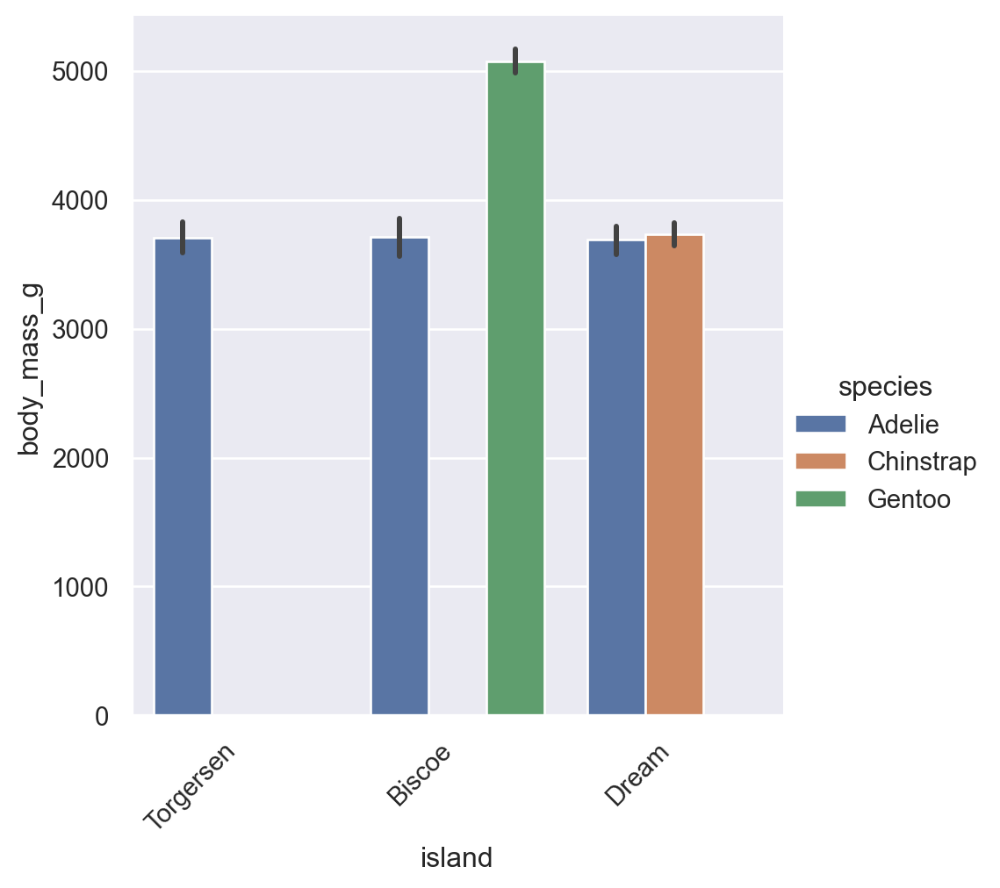
despine()Remove the top and right borders (“spines”) for a cleaner look:
nospine = sns.relplot(
data=penguins,
x="flipper_length_mm",
y="body_mass_g",
height=4
)
# Remove top and right spines
sns.despine()
# Show it
nospine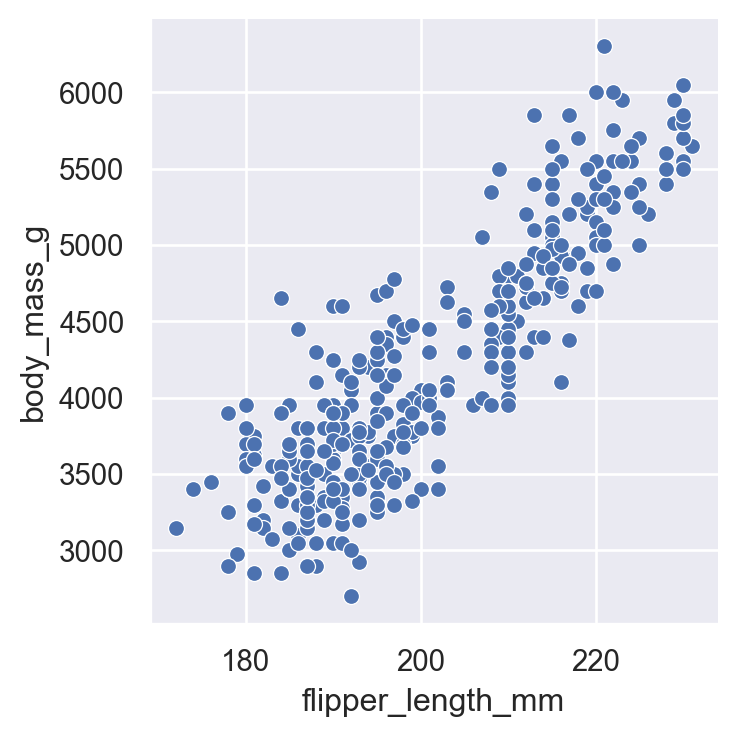
Use .savefig() with these key parameters: - dpi=300 (or higher) for print quality - bbox_inches='tight' to prevent labels being cut off - Vector formats (PDF, SVG) for publications
saveme = sns.relplot(
data=penguins,
x="flipper_length_mm",
y="body_mass_g",
hue="species",
height=4
)
# Update axis labels
saveme.set_axis_labels("Flipper Length (mm)", "Body Mass (g)")
# Despine
sns.despine()
# Save with high quality settings
saveme.savefig("my_figure.png", dpi=300, bbox_inches="tight")
saveme.savefig("my_figure.pdf", bbox_inches="tight") # Vector format
# You should see them in the file explorer to the left!For consistent publication-quality figures, set your theme once at the start of your script:
sns.set_theme(
style="ticks",
context="paper",
font_scale=1.0,
rc={"savefig.dpi": 300}
)Then use sns.despine() after each plot and save with bbox_inches="tight".
Let’s recreate a classic visualization of Anscombe’s Quartet - four datasets with identical summary statistics but very different distributions:

First we’ll load the data and take a quick look
# Load Anscombe's quartet
anscombe = pl.DataFrame(sns.load_dataset("anscombe"))
anscombe.head()| dataset | x | y |
|---|---|---|
| str | f64 | f64 |
| "I" | 10.0 | 8.04 |
| "I" | 8.0 | 6.95 |
| "I" | 13.0 | 7.58 |
| "I" | 9.0 | 8.81 |
| "I" | 11.0 | 8.33 |
Now we aggregate by dataset and confirm they have the same means and correlations:
anscombe.group_by("dataset").agg(
x_mean=col("x").mean(),
y_mean=col("y").mean().round(2),
correlation=pl.corr("x", "y").round(2) # handy to get correlations btwn cols
)| dataset | x_mean | y_mean | correlation |
|---|---|---|---|
| str | f64 | f64 | f64 |
| "II" | 9.0 | 7.5 | 0.82 |
| "IV" | 9.0 | 7.5 | 0.82 |
| "III" | 9.0 | 7.5 | 0.82 |
| "I" | 9.0 | 7.5 | 0.82 |
Now let’s create a nice figure trying to replicate the styles above as closely as possible. We’ll:
lmplot()list() and range() with slicingFacetGrid methods to customize limits, labels, titles, and spacing# Set the theme and font
sns.set_theme(style="white", font="Avenir")
# Make the plot
ansplot = sns.lmplot(
data=anscombe,
x="x",
y="y",
col="dataset",
col_wrap=2,
height=2,
aspect=1.2,
truncate=False, # dont restrict regression line to data range
ci=None, # lmplot uses ci, but everything else uses errorbar
line_kws={"color": "steelblue"}, # regression line
scatter_kws={"edgecolors": "sienna", "color": "darkorange"} # points
)
# Define custom tick ranges (skip 0)
xticks = list(range(0, 25, 5))[1:]
yticks = list(range(0, 16, 4))[1:]
# Set the limits and ticks
ansplot.set(
xlim=(0, 25),
ylim=(0, 16),
xticks=xticks,
yticks=yticks,
)
# Hide ticks and adjust label font-size
ansplot.tick_params(length=0, labelsize=8)
# Remove individual sub-plot labels
ansplot.set_axis_labels("","")
# Adjust subplot titles
ansplot.set_titles("{col_name}", size=10)
# Add an overall title
ansplot.figure.suptitle("Anscombe's Quartet", fontsize=12)
# Auto-adjust title & label spacing to not overlap
ansplot.figure.tight_layout()
# Show it
ansplotText(0.5, 0.98, "Anscombe's Quartet")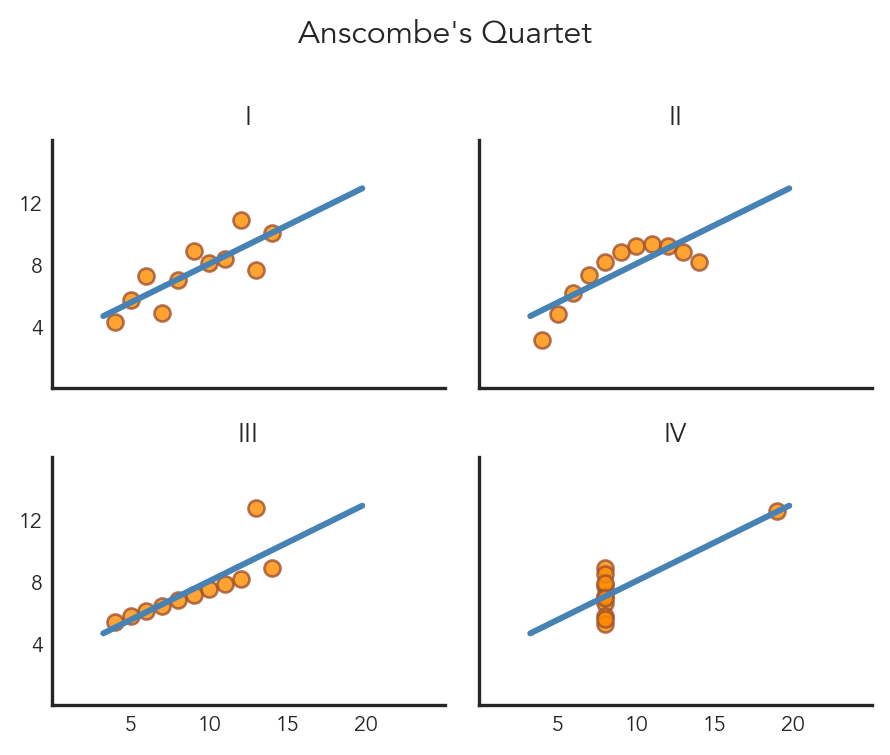
Figure-level functions:
sns.relplot(data, x, y, hue, col, row, kind="scatter"|"line")
sns.displot(data, x, y, hue, col, row, kind="hist"|"kde"|"ecdf")
sns.catplot(data, x, y, hue, col, row, kind="strip"|"swarm"|"box"|"violin"|"bar"|"point")
sns.lmplot(data, x, y, hue, col, row) # scatter + regressionQuick overview functions:
sns.jointplot(data, x, y, hue) # one relationship + marginals
sns.pairplot(data, hue) # all pairwise relationshipsCustomization:
sns.set_theme(style="...", context="...", palette="...")
g.set_axis_labels("x label", "y label")
g.set_titles("{col_name}")
g.set(xlim=(a, b), ylim=(c, d))
g.figure.suptitle("Overall title")ggplot expertsIf you’re coming from R’s ggplot2, this section maps familiar concepts to their seaborn equivalents. Use the tabs to toggle between the two syntaxes.
ggplot(df, aes(x = var1, y = var2, color = group))| Mapping | aes() parameter |
|---|---|
| Position | x, y |
| Color | color / colour |
| Fill | fill |
| Shape | shape |
| Size | size |
| Transparency | alpha |
sns.scatterplot(data=df, x="var1", y="var2", hue="group")| Mapping | Parameter |
|---|---|
| Position | x=, y= |
| Color | hue= |
| Fill | hue= (context-dependent) |
| Shape | style= |
| Size | size= |
| Transparency | alpha= |
| Task | Function |
|---|---|
| Scatter | geom_point() |
| Line | geom_line() |
| Bar (counts) | geom_bar() |
| Bar (values) | geom_col() |
| Histogram | geom_histogram() |
| Density | geom_density() |
| Boxplot | geom_boxplot() |
| Violin | geom_violin() |
| Regression | geom_smooth() |
| Task | Function |
|---|---|
| Scatter | sns.scatterplot() or relplot(kind="scatter") |
| Line | sns.lineplot() or relplot(kind="line") |
| Bar (counts) | sns.countplot() |
| Bar (values) | sns.barplot() |
| Histogram | sns.histplot() or displot(kind="hist") |
| Density | sns.kdeplot() or displot(kind="kde") |
| Boxplot | sns.boxplot() or catplot(kind="box") |
| Violin | sns.violinplot() or catplot(kind="violin") |
| Regression | sns.lmplot() or sns.regplot() |
ggplot(df, aes(x, y)) +
geom_point() +
facet_wrap(~group)| Faceting | Syntax |
|---|---|
| Wrap by one variable | facet_wrap(~var) |
| Wrap with column limit | facet_wrap(~var, ncol=2) |
| Grid by two variables | facet_grid(row ~ col) |
sns.relplot(data=df, x="x", y="y", col="group")| Faceting | Syntax |
|---|---|
| Wrap by one variable | col="var" |
| Wrap with column limit | col="var", col_wrap=2 |
| Grid by two variables | row="row", col="col" |
ggplot(df, aes(x, y)) +
geom_point() +
theme_minimal()| Theme | Description |
|---|---|
theme_gray() |
Gray background with grid |
theme_bw() |
White background with grid |
theme_minimal() |
Minimal, clean |
theme_classic() |
Classic with axis lines |
Output scaling: Set in ggsave(width=, height=, dpi=)
sns.set_theme(style="whitegrid")
sns.relplot(data=df, x="x", y="y")| Style | Description |
|---|---|
"darkgrid" |
Gray background with grid |
"whitegrid" |
White background with grid |
"white" |
Minimal, clean |
"ticks" |
Classic with axis ticks |
Output scaling: Use context= parameter
"paper" — smallest"notebook" — default"talk" — larger for presentations"poster" — largestggplot(df, aes(x, y)) +
geom_point() +
labs(
title = "My Title",
x = "X Label",
y = "Y Label"
)Figure-level functions (relplot, displot, catplot):
g = sns.relplot(data=df, x="x", y="y")
g.set_axis_labels("X Label", "Y Label")
g.figure.suptitle("My Title", y=1.02)Axes-level functions (scatterplot, histplot, etc.):
ax = sns.scatterplot(data=df, x="x", y="y")
ax.set(xlabel="X Label", ylabel="Y Label", title="My Title")